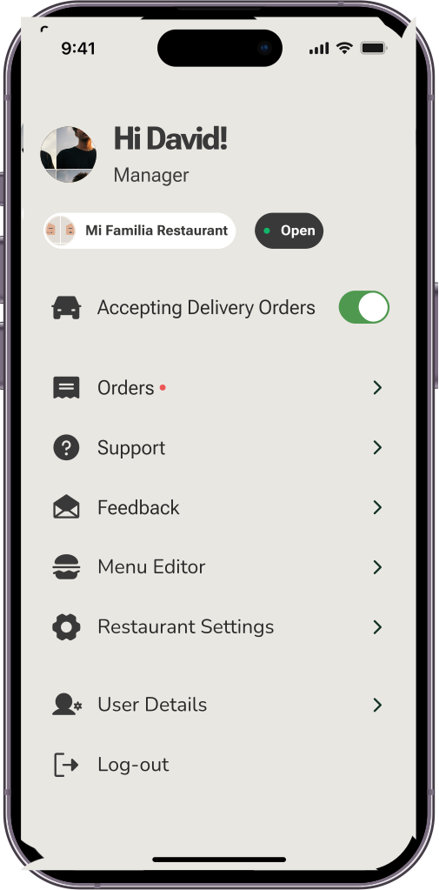

The food delivery alternative, empowering communities.
OpenDeli is a decentralized, open-source food delivery network that empowers local restaurants and couriers to establish their operations on their terms, ensuring fair treatment, lower fees, and full control over collaborations.


Be part of the decentralized revolution. Join the growing number
of communities.
Conteact Us
Project RoadMap
-
Understand the ecosystem of indie food delivery platforms
Understanding Human Intervention in the Platform Economy: A Case Study of an Indie Food Delivery Service.
Samantha Dalal, Ngan Chiem, Nikoo Karbassi, Yuhan Liu, Andrés Monroy-Hernández
CHI 2023. LinkMapping the Landscape of Independent Food Delivery Platforms in the United States.
Yuhan Liu*, Amna Liaqat*, Owen Xingjian Zhang, Mariana Fernandez, Ankhitha Manjunatha, Alexander Yang, Orestis Papakyriakopoulos, Andrés Monroy-Hernández
CSCW 2024. Link -
Design the decentralized protocol
Designing an ActivityPub-like decentralized protocol for delivery.
Link -
Implement open source tech


Drivers
OpenDeli gives drivers more freedom. Our decentralized, open-source software enables local businesses to cooperate in their best interests. What's more, our powerful system enables groups of drivers to become co-owners with companies, cooperatives and non-profit organizations.
With OpenDeli, drivers can advocate for their rights at the local level. Local governments can also use our powerful software. Using OpenDeli, they can provide drivers with free services and ensure they receive fair pay.
Restaurants
OpenDeli’s system gives restaurants more control. With OpenDeli, local restaurants can create their own company. This lets local eateries work together and act in their best interests.
Our software gives power back to restaurants. They can break away from the major food delivery services that only want to extract. OpenDeli enables restaurants to work in a way that benefits them best. We also enable restaurants to create shared ownership of delivery services. This way, restaurants have more say at the table and can work together for each other’s best interests.


Consumers
Our software supports a decentralized future. With OpenDeli, customers support their communities with every order.
OpenDeli’s software empowers local businesses to create value-driven choices for their customers. Whatever their food preferences, users can align their values with their orders. By using OpenDeli, people support their communities every time they buy.
-
Deploy tech in real-world community through our Partners
Nosh is a committed partner on this project. We also are on their advisory board.
Nosh Website -
Research on governance, marketplace, design and others
Team
Contact Us
Sign up for our newsletter to get the latest news!